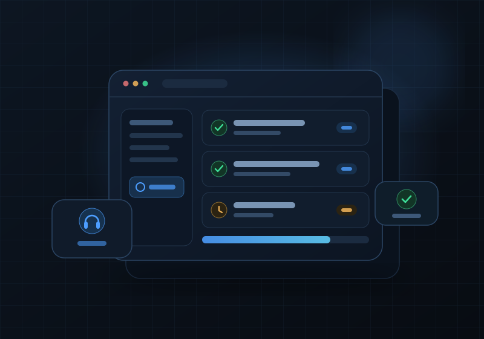
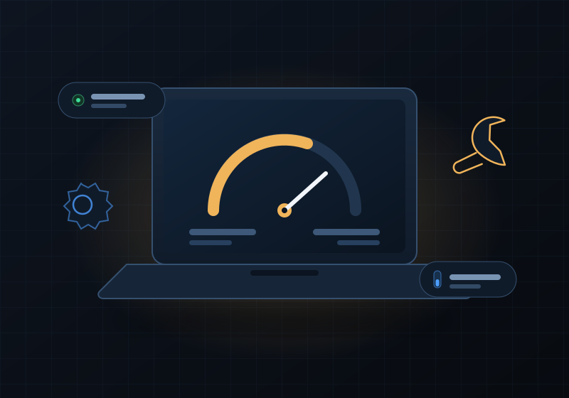
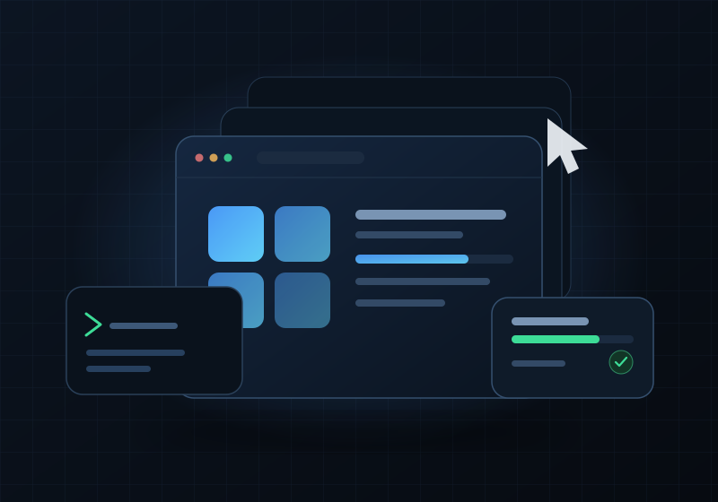
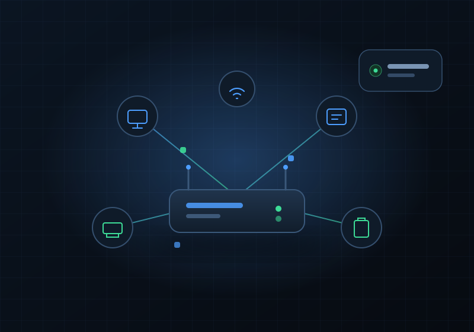
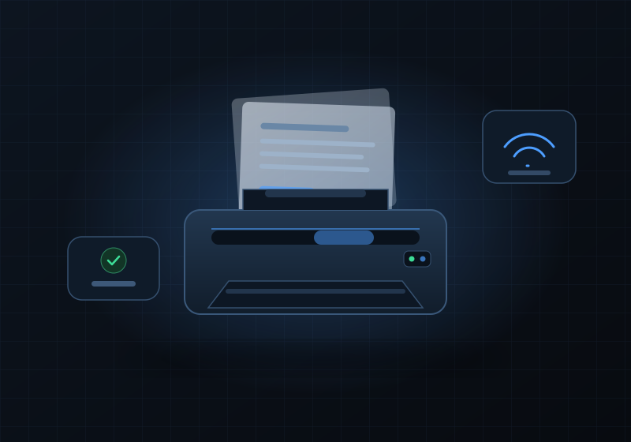
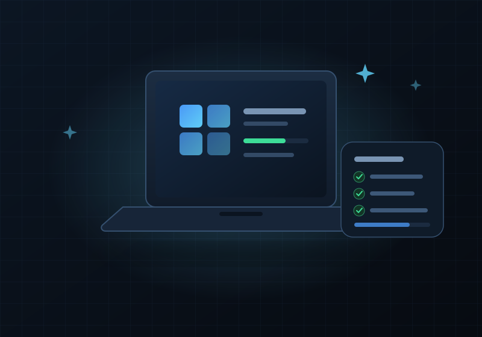
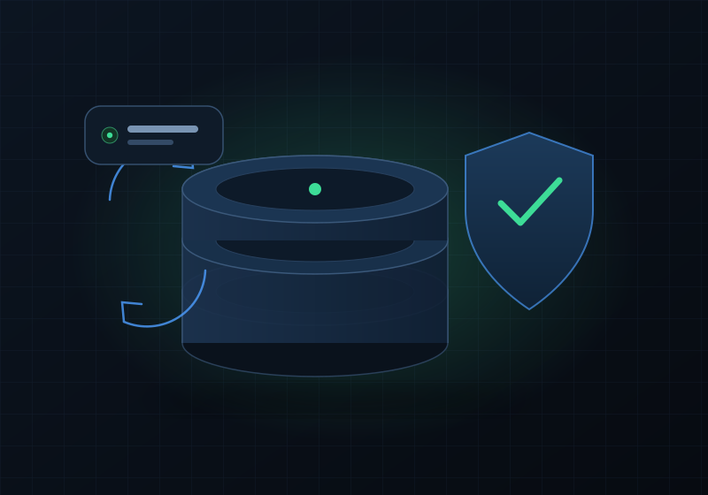

مكاتب المحاسبة
أجهزة، طابعات فواتير، ونسخ احتياطي لملفات الزبائن والتصريحات.
صيانة الحواسيب، تثبيت Windows، الشبكات والطابعات، والنسخ الاحتياطي — بزيارة ميدانية أو عن بُعد، في الجزائر العاصمة.
أدوات رقمية مجانية تساعد الطلبة والمستخدمين في الجزائر على إنجاز أعمالهم بسهولة.
سبع خدمات أساسية تغطي الأجهزة، الأنظمة، الشبكات، الطابعات والبيانات — بلا وسطاء.

01متابعة تقنية لأجهزة المكتب، البرامج، والبريد والطابعات عند الحاجة.
التفاصيل
02تشخيص الأعطال، تنظيف النظام، تسريع الأداء واستبدال الأجزاء التالفة.
التفاصيل
03تثبيت نظيف، تعريفات أصلية، تحديثات، ومعالجة أخطاء النظام.
التفاصيل
04ضبط الراوتر، مشاركة الملفات، وربط أجهزة المكتب بشبكة مستقرة.
التفاصيل
05تثبيت التعريفات، المشاركة عبر الشبكة، وحل مشاكل طابور الطباعة.
التفاصيل
06جهاز جاهز للعمل من أول يوم: نظام، برامج، طابعة وإعدادات.
التفاصيل
07تنظيم مجلدات العمل وخطة نسخ دورية تحمي بيانات المكتب.
التفاصيلتنسيق مستندات Word للمذكرات وتقارير التربص ومشاريع نهاية التكوين، مع فهرس وترقيم وتصدير PDF حسب تعليمات المؤسسة.
حسب تعليمات المؤسسة، ودون كتابة المحتوى الأكاديمي.
نتولى الجانب التقني اليومي لمكتبك حتى يتفرغ فريقك للعمل. تدخل سريع، شرح واضح، وحلول تناسب حجم النشاط.
بدون التزام بعقد سنوي — الخدمة تُحدد بعد المعاينة.
لكل نشاط طريقته في حفظ الوثائق والطباعة. نتعامل مع الأجهزة بما يخدم سير العمل اليومي.
أجهزة، طابعات فواتير، ونسخ احتياطي لملفات الزبائن والتصريحات.
طباعة سريعة، ماسح ضوئي، وشبكة لتبادل المذكرات بين المكتب والكاتب.
معايرة طابعات العقود، أرشفة آمنة، وحماية الأجهزة من الوسائط الخارجية.
أداء للحواسيب الهندسية، طابعات A3، ومشاركة سريعة للمخططات.
شبكة موحدة، مجلدات مشتركة، ودعم مباشر عند توقف العمل.
بيئة عمل مستقرة، برامج أساسية، ونسخ احتياطي تلقائي للوثائق.
اختر العرض الأقرب لحالتك، وانتقل إلى الحل المناسب.
إقلاع طويل، تجمد عند فتح الملفات، أو أداء غير مستقر.
رسائل خطأ، طابور عالق، أو الجهاز لا يظهر على الشبكة.
الإنترنت يعمل لكن الملفات والطابعة المشتركة غير متاحة.
تحتاج Windows، تعريفات، برامج مكتبية وطابعة جاهزة.
وثائق متفرقة وخوف من فقدان معاملات الزبائن.
عدة أجهزة ومشاكل متكررة دون شخص مسؤول.
أربع خطوات واضحة، بدون مصطلحات أو إجراءات معقدة.
واتساب أو طلب خدمة، مع وصف مختصر للمشكلة.
معاينة الحالة وتحديد السبب والتكلفة قبل التنفيذ.
إصلاح، إعداد أو تركيب، مع اختبار كل خطوة.
شرح ما تم، وتوصيات بسيطة للوقاية والمتابعة.
لا وكالة كبيرة ولا دعم آلي. تواصل مباشر مع من ينفذ العمل.
عمل ميداني مع مكاتب المحاسبة والمحاماة والتوثيق.
نقترح ما تحتاجه فعلاً، دون برامج أو تكاليف زائدة.
تفهم المشكلة والحل بلغة بسيطة، قبل وبعد التدخل.
تنسيق المواعيد حسب طبيعة عمل المكتب واستعجاله.
محمد الأمين — تقني سامي في الإعلام الآلي. أساعد المكاتب والمؤسسات الصغيرة في الجزائر العاصمة على تشغيل أجهزتها وشبكاتها بثبات.
iComputer Urban Tech DZ هو شريك تقني مرن: تدخل عند الحاجة، شرح واضح، ومتابعة دون تكلفة مسؤول IT بدوام كامل.
إجابات مباشرة حول نطاق الخدمة وطريقة العمل.
نعم، هذا هو مجالنا الأساسي: مكاتب المحاسبة، المحاماة، التوثيق، الدراسات، والوكالات الصغيرة التي لا تملك مسؤول IT متفرغ.
نعم. نضبط الراوتر، نربط الأجهزة سلكياً أو عبر Wi-Fi، ونفعّل مشاركة المجلدات والطابعات مع صلاحيات مناسبة.
بعض المشاكل البرمجية يمكن حلها عن بُعد بعد موافقتك. أما الأعطال المادية أو إعداد الشبكة فيحتاجان غالباً إلى زيارة.
نعم: تثبيت Windows نظيف، التعريفات الأصلية، التحديثات، البرامج المكتبية الأساسية، وإعداد الطابعة والبريد.
نعم، ننظم مجلدات العمل ونضع خطة نسخ دورية محلية وخارجية تقلل خطر فقدان ملفات الزبائن.
نطاق العمل الأساسي هو الجزائر العاصمة. تُحدد إمكانية الخدمة حسب المنطقة والتوفر قبل تثبيت الموعد.
أرسل وصفاً قصيراً أو صورة لرسالة الخطأ عبر WhatsApp. سنوضح الخطوة التالية قبل أي التزام.